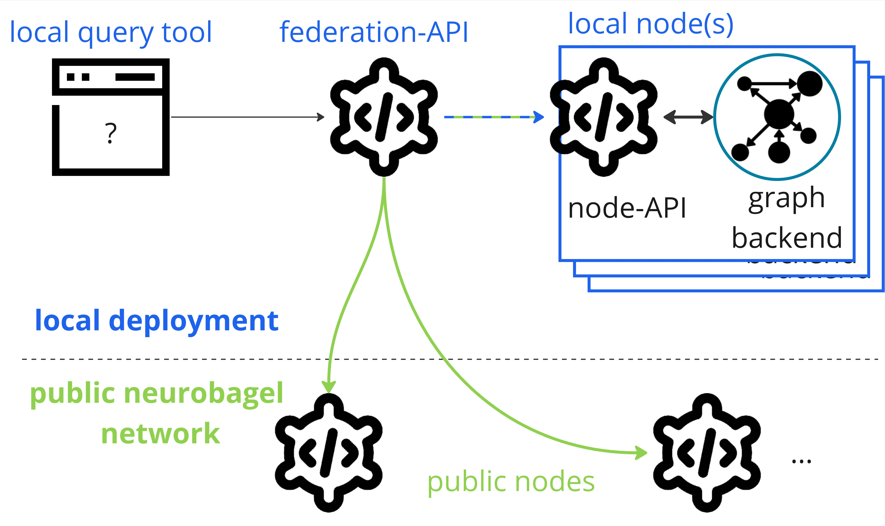

Getting started
The following sections will get you started with deploying your own Neurobagel node, a graphical query tool, and a local federation API (everything in blue in the picture below) that lets you search across the data in your node and in public Neurobagel nodes.

To prepare your Neurobagel node for production use (i.e., for local or other users), and to configure your deployment according to your specific needs, refer to the detailed Configuration documentation.
Requirements
Neurobagel tools are provided as Docker containers and are launched with Docker Compose.
Don't install Neurobagel tools directly on your machine
Please only use the Docker images provided by Neurobagel
(or the third party providers Neurobagel relies on) and only launch
them with our provided docker-compose.yml recipe.
Do not install GraphDB locally on your computer, as doing so can interfere with the deployment of the Neurobagel tools.
docker and docker compose
If you haven't yet, please install both docker and docker compose
for your operating system:
-
Install Docker Desktop on Windows. This will install both
dockeranddocker compose. -
We strongly recommend also installing Windows Subsystem for Linux to get a Windows-supported Linux installation for a more seamless Neurobagel deployment experience. Simply follow these instructions to make your existing Docker Desktop installation (including Docker and Docker Compose) available when running WSL.
Install Docker Desktop on Mac.
This will install both docker and docker compose automatically.
Linux is the only supported OS
We test and deploy on Linux and ensure that our deployment instructions work on Linux systems.
We also try to provide docs and help for different architectures, but as a small team with limited resources we won't be able to help you debug Operating System specific problems.
Because we rely on some modern features of these tools, please make sure you have at least the following versions on your machine:
dockerengine: v20.10.24 or greaterdocker --versiondocker compose: v2.7.0 or abovedocker compose version
The Neurobagel node deployment recipe
The neurobagel/recipes repository
on GitHub contains our official
Docker Compose recipe and template configuration files for setting up a local Neurobagel node.
- Clone the GitHub repository to your machine and navigate to it
git clone https://github.com/neurobagel/recipes.git cd recipes -
Make copies of the template configuration files to edit for your deployment (do not edit the templates themselves)
cp template.env .env cp local_nb_nodes.template.json local_nb_nodes.json -
Change the placeholder value of
NB_API_QUERY_URLin the.envfileNB_API_QUERY_URL=http://XX.XX.XX.XXhttp://XX.XX.XX.XXmust be replaced with the URL address where the Neurobagel federation API will be accessed:- If you are deploying Neurobagel for yourself or deploying and trying the services on your local machine only,
you can use
NB_API_QUERY_URL=http://localhost:8080, where8080is the default host port for the federation API. - If you are deploying Neurobagel on a server for other users, you must use the IP (and port) or URL intended for your users to access the federation API on the server with.
On a machine with an ARM-based processor?
The default Docker Compose recipe assumes that you are launching Neurobagel on a machine with x86_64 (AMD/Intel) architecture (most Linux or Windows machines). If your machine instead uses ARM-based architecture (e.g., certain Macs), additionally change the following line in your
docker-compose.ymlfile:tograph: image: "ontotext/graphdb:10.3.1"You can double check the architecture of your machine in the system settings or using the commandgraph: image: "ontotext/graphdb:10.3.1-arm64"lscpu. - If you are deploying Neurobagel for yourself or deploying and trying the services on your local machine only,
you can use
If you have already have graph-ready data
At this point, if you have already generated Neurobagel JSONLD data files, you can proceed with the below additional steps before launching Neurobagel:
-
Update
LOCAL_GRAPH_DATAin.envto the path containing the data files you wish to add to the graph database.You can update these data in the graph at any time. For more information, see this section.
-
Change the default credentials for your graph database following these instructions.
Info
This section provide a minimal configuration for launching Neurobagel. In most cases, particularly when deploying Neurobagel for other users, additional configurations may be necessary to ensure optimal usability and security of your node.
Please refer to our detailed documentation for a complete overview of configuration options.
Launch Neurobagel
Once you have completed at least steps 1 to 3 above, you can launch your own Neurobagel node using Docker Compose:
docker compose up -d
Explanation
This is a shorthand for: docker compose --profile full_stack up -d
This will:
- pull the required Docker images (if you haven't pulled them before)
- launch the containers for the Neurobagel services using the default
full_stackservice profile - automatically set up and configure the services based on your configuration files
- automatically upload data to the Neurobagel graph (by default, it will upload an example dataset we have provided for testing)
You can check that your docker containers have launched correctly by running:
docker ps
❯ docker ps
CONTAINER ID IMAGE COMMAND CREATED STATUS PORTS NAMES
d5e43f9ff0c2 neurobagel/federation_api:latest "/bin/sh -c 'uvicorn…" 8 seconds ago Up 8 seconds 0.0.0.0:8080->8000/tcp, :::8080->8000/tcp recipes-federation-1
f0a26d0ea574 neurobagel/api:latest "/usr/src/api_entryp…" 8 seconds ago Up 8 seconds 0.0.0.0:8000->8000/tcp, :::8000->8000/tcp recipes-api-1
d44d0b7359c8 ontotext/graphdb:10.3.1 "/usr/src/neurobagel…" 8 seconds ago Up 8 seconds 0.0.0.0:7200->7200/tcp, :::7200->7200/tcp, 7300/tcp recipes-graph-1
29a61a2d83de neurobagel/query_tool:latest "/bin/sh -c 'npm run…" 8 seconds ago Up 8 seconds 0.0.0.0:3000->5173/tcp, :::3000->5173/tcp recipes-query_federation-1
The docker-compose.yml recipe provides additional service profiles
for different deployment use cases (e.g., if you do not need to set up local query federation). Please refer to
our service profile documentation for details.
Next steps
 You are now the proud owner of a running Neurobagel node. Here are some things you can do now:
You are now the proud owner of a running Neurobagel node. Here are some things you can do now:
- Try the Neurobagel node you just deployed by accessing:
- your own query tool at http://localhost:3000, and reading the query tool usage guide
- the interactive docs for your node API at http://localhost:8000/docs, and reading the API usage guide
- Prepare your own dataset for annotation with Neurobagel
- Add your own data to your Neurobagel graph to search
- Learn about the different configuration options for your Neurobagel node
- Hopefully all went well, but if you are experiencing issues, see how to get help